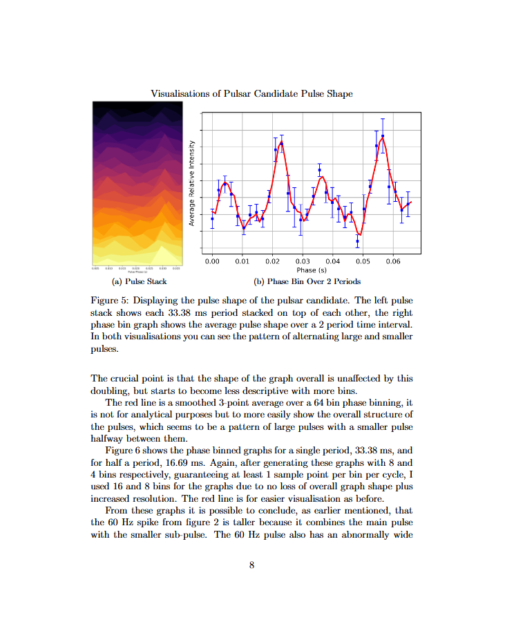
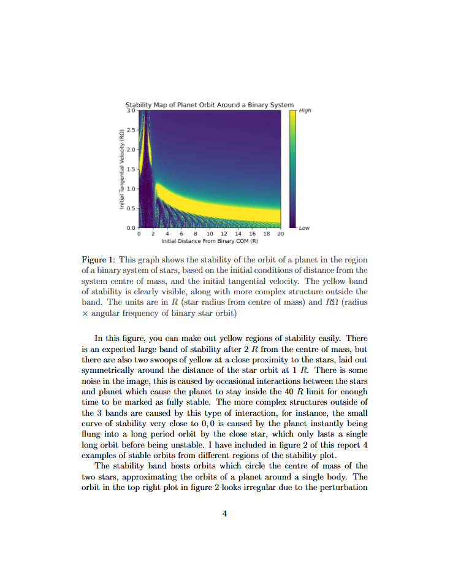
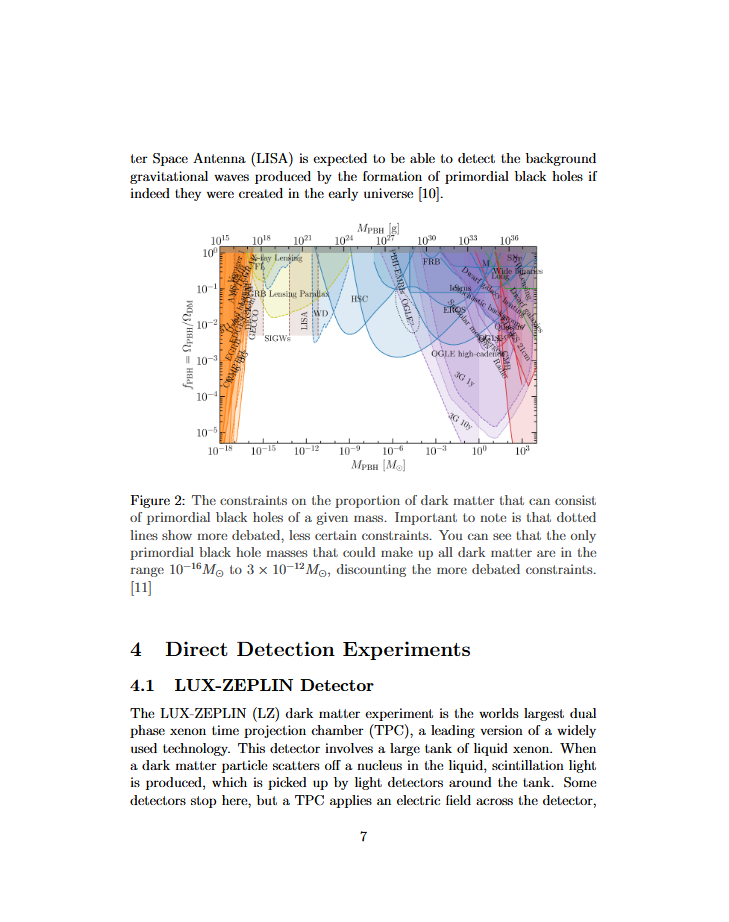
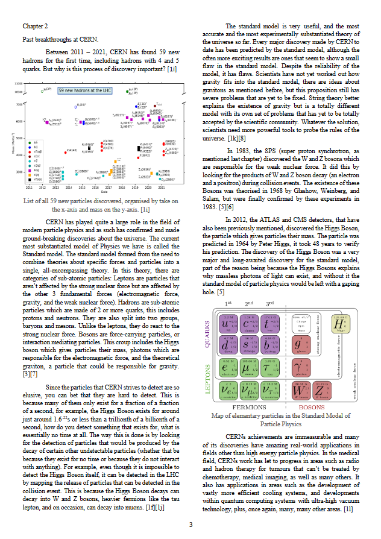
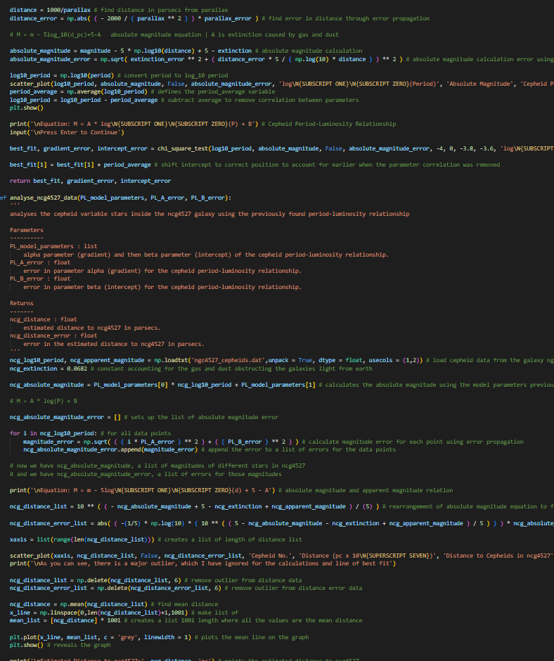
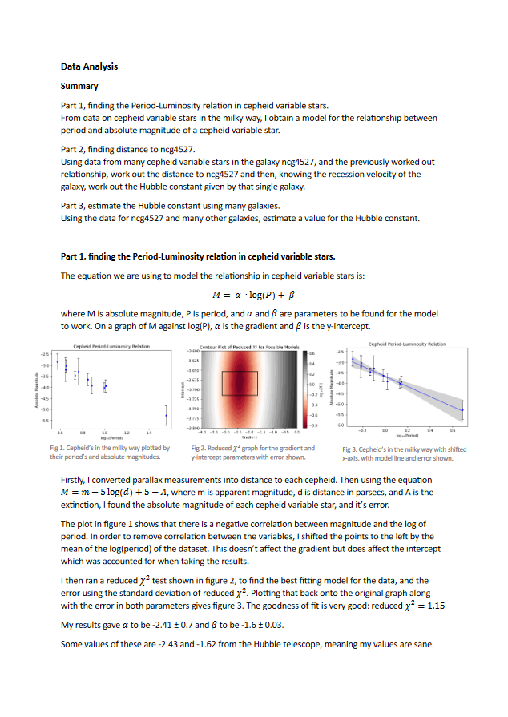
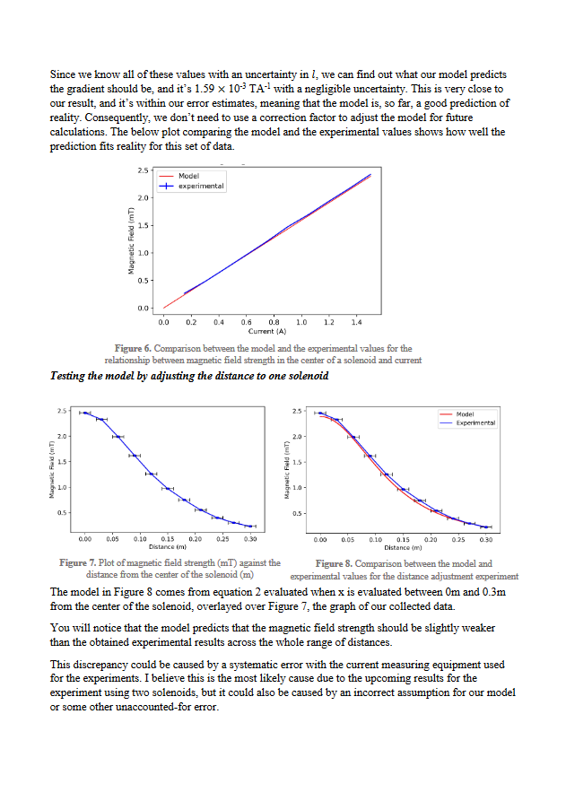
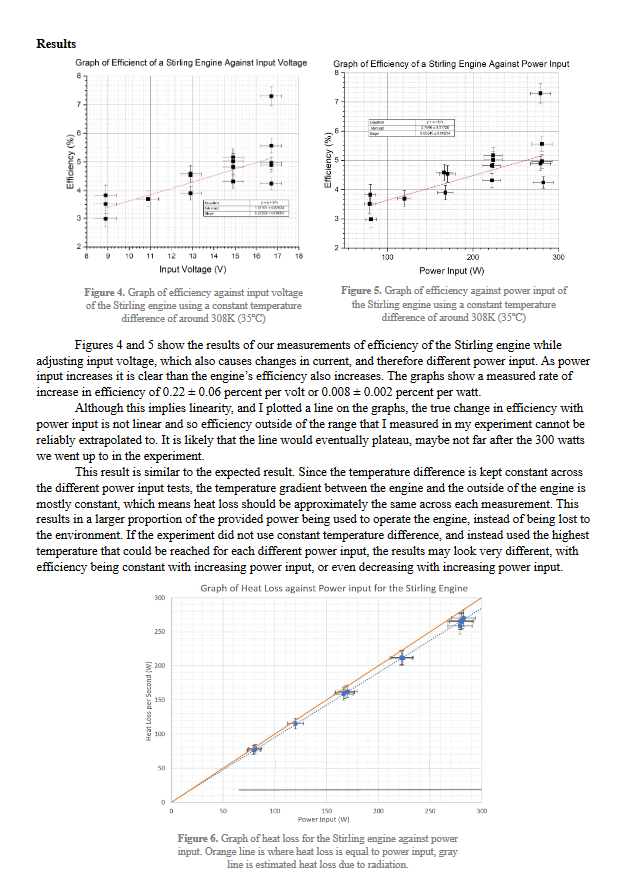

This report uses Fourier analysis and phase binning to analyse 500 datapoints of infrared intensity data from a region of the sky believed to contain a pulsar.

In this report, I use the Runge-Kutta method to simulate dynamics, and investigate the stability of planet orbits around binary stars of similar mass.

In this report I quickly summarise the history of dark matter, then discuss some of the more popular candidate solutions, and end by using some current dark matter detectors as examples to explain different dark matter related experimental techniques.

My A level EPQ project, a 5000 word essay on the Large Hadron Collider at CERN. I got 48/50 marks on this essay, an A* qualification.

The coding section of a statistics project. Using python with matplotlib to work out the hubble constant. We had to use data to calculate the cepheid period-luminosity relationship, then use that to find the distances to far away galaxies, then compute the hubble constant using that information.

This is the write up for the coding stats project. It details the method of finding the hubble constant, and shows graphs of the data. The outcome was a value of 85.8 +/- 14.4 km/s/Mpc. This data analysis got 85 marks out of 100.

In this lab report, I detailed my investigations into the magnetic fields produced by solenoids. I managed to produce quite accurate graphs which were shaped as expected. This report got 90 marks out of 100.

This is my second semester lab report, done in a group. We investigated the efficiency of a stirling engine depending on both the power input and the engine temperature difference, cooling the engine with ice. This one also got 90 marks out of 100.